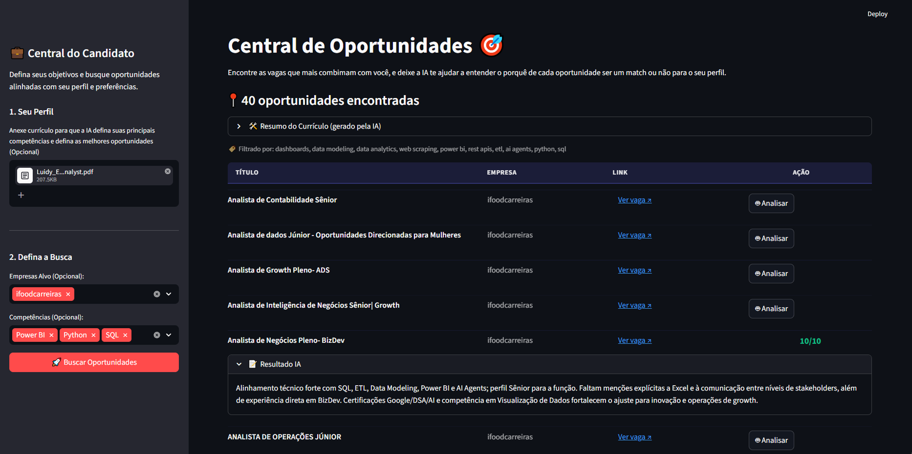
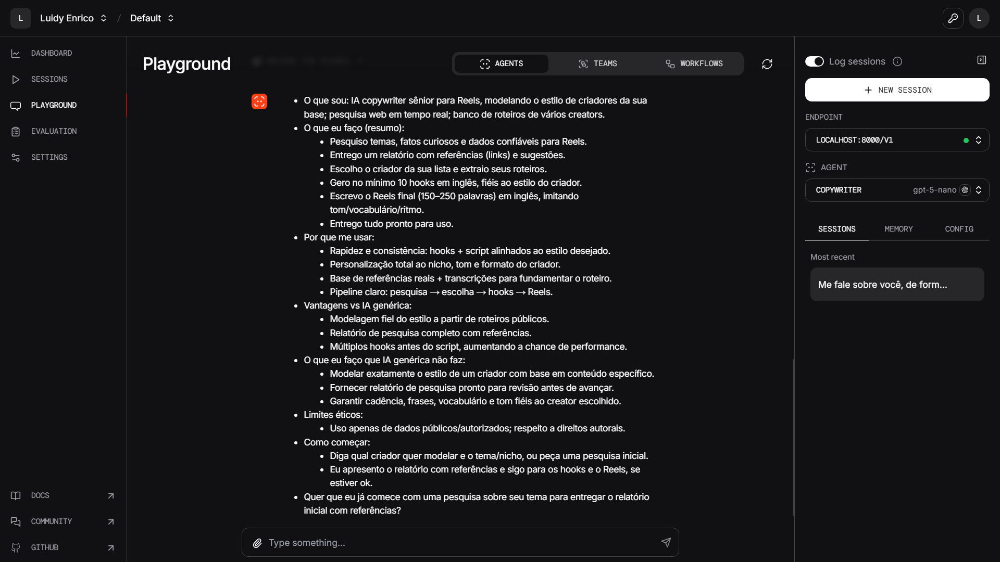

AI Job Matcher
AI-powered job matching and analysis system via external APIs.

Full BI Pipeline
Complete BI project from SQL extraction to full visualization in Power BI.

Web Scraping
Web scraping public health funds data with Python automation.

Content Creator Agent
Automated content creation agent using AI tools, Whisper and Python.

BI Cross-referencing 1
Multi-source data crossing and analysis with advanced DAX in Power BI.

BI Cross-referencing 2
Advanced data relationships and modeling with multiple BI data sources.